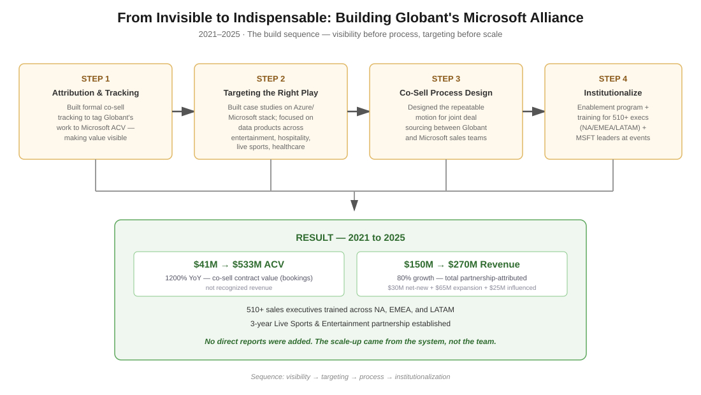

When I joined, Globant's Microsoft partnership was worth about $41M a year in contract value. To Microsoft, that barely registered. There was no real process for how our sales teams worked with theirs, no shared playbook, nothing that would hold up if I stepped away. The relationship wasn't struggling because the opportunity was small. It was struggling because nothing had been built to make it work at scale.
I had no direct reports and no formal power to make regions fall in line. What I did have was some say over budget and a direct line to our Managing Directors, plus regular time in front of the Regional CBO and CRO. Everything I wanted to change had to happen through influence and design, not through telling people what to do.
Before I could design anything, I had to make our work visible. Globant wasn't getting credit for the value it was already driving, and Microsoft genuinely couldn't see it. So the first thing I built was a formal way to track and tag our involvement to actual Microsoft contract value, so the relationship's worth wasn't just something we talked about anecdotally.
From there, I built out a set of real case studies grounded in specific Microsoft technologies, Azure and the rest of their stack, and used them to figure out where we were genuinely strong. That led us to data products across entertainment, hospitality, live sports, and healthcare. Figuring that out came before any process design, not after, because it decided which industries were actually worth building a repeatable motion around.
Only once I had that visibility and that focus did I design the co-sell process itself, then the enablement program, then a regional training curriculum that reached over 510 sales executives across three regions. I also started inviting Microsoft's own product and sales leaders to our company events, so people on both sides had real relationships with each other, not just relationships with me.
Co-sell contract value scaled from $41M to $533M, a 1200 percent increase. That's bookings, not recognized revenue, so it's best read as a sign of pipeline health rather than cash in hand. Separately, our total partnership revenue, across this alliance and others, grew from $150M to $270M, 80 percent, which included 110 percent growth in AI services revenue specifically. Over 510 executives across North America, EMEA, and LATAM went through the training. Alongside all this, we also landed a 3 year Live Sports and Entertainment partnership.
The headline number matters less to me than how it happened. A 1200 percent increase, and I never added a single person to the team. It happened because I changed the system underneath the relationship, in a specific order: make the value visible, find where you're actually strong, build the process, then make sure it doesn't depend on you personally. Most alliance stories are really about relationships. This one is about structure, and that's the harder, more transferable skill.